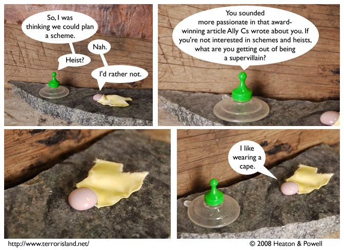

Strip #283
— Wednesday, April 2, 2008
The Green Grocer doesn’t really get anything out of being a supervillain.
Notes, Thoughts, &c.
Ben’s Notes
I wonder who the Reportress really is.
Lewis’s Notes
In case any of you were curious, apparently, one of the hardest things to do in philosophy is make sense of claims that say certain things don’t exist.
I’m not kidding, or, at least, I’m not entirely kidding.